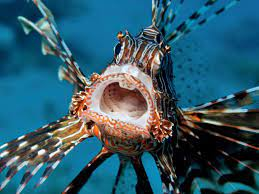
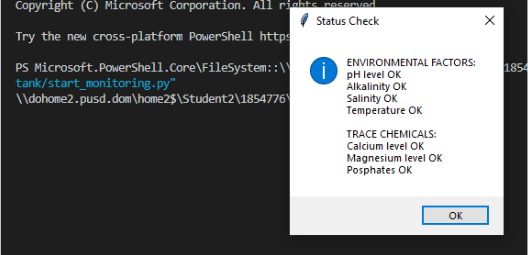
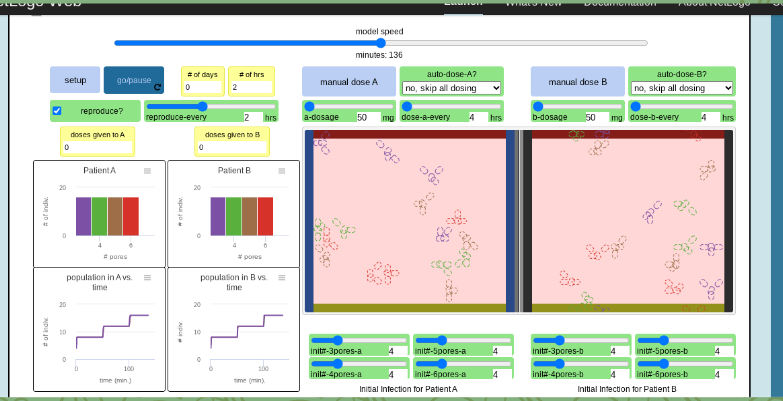

Home
Portfolio
About Jasmine
Jasmines Portfolio Page!
My first project!
Build your own and ineractive pet

My project was to make a pet where you could choose which pet you would like and get to customize it in a few different ways. And as the interactive portion you were able to choose wether your pet sleeps or eats.
1.2.5 Project
Piano Keys

The goal of this project was to be able to make a piano keyboard that plays sound. We ran into a few issues with our onkeypress function and ended up making an imput statement that would still allow the user to play the music when imputing certain keys. We were even able to modify a video into a Wav file and imput it, along with some other piano keys.
Scratch Project
Desgin your Drink
The goal of this project was to be able to desgin your own drink with a few variables you can select from. You first input your name, then you can choose what cup you have, which also can change the location, then you can pick what drink you would like, ice, whipped cream, and then what background you would like. Its made to just be for fun and to relax a little bit.
2.1.6 Project
PHishing


This prject was to debug and find out what the problems were within code.
4.1.4 Project
Bacterial Infection

For this project we were using a new platform called Net Logo. We were allowed to pick a topic that interested us and Bacterial Infection was the most interesting. The model represents how bacteria in a population becomes more resistant, which is because the more people are exposed to it the more immune everyone becomes over time.